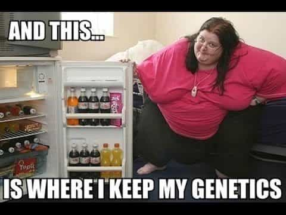

In modern society, the biggest obstacle to overcome is losing weight brought on by years of inactivity and piss poor diet. After putting in a lot of discipline and effort in regards to eating right and hitting the gym, you will reap the reward of a massively improved physique.
When you lose excess fat, you feel increase in confidence thanks to the positive attention received from others. New clothes are purchased to flaunt your new physique while fat clothes are given away in an attempt to completely shed all memories of the extra pounds that used to be present in the mirror. After a long period of dieting, the strict control is loosened and you feel comfortable indulging here and there.
A few months later, the new clothes are getting tight while the gym membership card collects dust in a drawer. The lies we use to justify our complacency grow in proportion to our re-growing waist size. Before long, it’s time to go clothes shopping again, this time to get a size or two bigger because the only pants that fit anymore are sweat pants. The rationalizations are many but the reality is the fat is coming back. It creeps up and is difficult to notice until it’s too late.
They didn’t shrink in the dryer.
My Story
I was that person twice. For reference I am 6’2 (188 cm). I was at my heaviest in high school, where I tipped the scales at 330 pounds (150 kg). Tired of always asking for rides, I began walking everywhere and inadvertently lost 70 pounds without making any major changes to how I was eating (isn’t adolescence great). From there I lost another 40lbs and settled in at 220 pounds.
A few years later, thanks to a poor diet and inactivity driven by significant marijuana usage and alcohol consumption, I was back at 280lbs. I began exercising and watching what I ate and dropped back to 220. Again after a couple of years my motivation had gone up in smoke along with the copious amounts of marijuana I consumed and I was back at 290. I had reality shoved in my face like the many slices of pizza and bottles of soda I guzzled when I was at an electronics store and did not recognize myself on the TV until after I thought “Wow, that guy is fat.”

I approached the age where my father was diagnosed with type 2 diabetes and watched my parents’ physical health degrade from their obesity. I knew I did not want that kind of life. I stopped smoking weed at 25 and at 26 (5 years ago) I became serious about my approach to how I eat.
After researching different diets I dropped to 170lbs over the course of a year using the South Beach Diet. I’m not going to break down the diet here as the information is readily available online but I liked South Beach because after an initial restrictive phase of two weeks you are able to eat a wide variety of foods with no macro-nutrients avoided.
Some tips that have worked for both my weight loss and continued maintenance
All accountability is your own. The only person you cheat during self improvement is yourself. Most people want you to fail because it helps reinforce their belief that it’s not their fault that they are fat. Learn how to say no to yourself. What got you fat in the first place is always giving in to cravings. Self-control is a pillar of the red pill and antithetical to the “muh feelings” mantra of the left.
Eliminate spontaneity by planning every meal. Control needs to be maintained and it is nearly impossible to be in control when you don’t have a plan. I always have my lunch prepared the night before work, if not a day or two in advance.
Sometimes bumper sticker wisdom can be relevant.
Learn to love healthy food. Staring down a pound of broccoli on your plate is not an initially appetizing endeavor, especially when you are used to a diet of burgers and fries. It can become an acquired taste, much like coffee and beer, but you must acquire healthy tastes by consistent consumption.
Prioritize protein intake. This is important during weight loss as adequate protein intake helps to preserve lean body mass. Advice varies but I like to shoot for one gram per pound of lean body mass. Not getting enough protein during my weight loss was a mistake that can be easily avoided.
As an adult, what you eat and how much you eat is 95% of losing weight and maintaining the loss. Unless you exercise at professional athlete levels you will never out train a bad diet, especially once you have gotten fat.
If I could go back, the one thing I would do different is to incorporate strength training during the weight loss, which is the other 5%. I became weak and skinny fat. After struggling to lift a 50 pound bag at work, I knew something needed to change. I began strength training using Stronglifts 5×5 and I am up to 195lbs.
I am consistent in lifting (heavy) three times a week while including some sort of physical activity on my rest days such as walking my dog. My current project is to get my body fat under 10% and I am using the Leangains method of intermittent fasting, of which I am a huge fan.
This should be a part of your gym repertoire.
What you’re up against
There is a myth perpetuated by many that losing weight increases metabolism. This is far from true. As you weigh less, your body requires less energy to move and your metabolism is lowered (simple thermodynamics, right?).
There are a few other things at play. When you gain fat, your body creates more fat cells to store the fat. As you lose weight the cells empty but are not destroyed. They remain, waiting to fill again. This is one of the main reasons why so many people easily regain the weight they lose and then gain more. Some studies state that as much as 97% of people regain the weight lost after a diet.
Another mechanism to fight sustained weight loss is that your body begins increasing production of a hormone know as lipoprotein lipase as you lose weight. This hormone helps to refill the fat cells that are empty. You are basically at war with your body to keep the weight off and the fight will be there for the rest of your life.
It has been four years since I dropped to my lowest weight, and the key takeaway that I tell anyone who will listen is that once weight is lost, it is critical to maintain and build upon the behaviors that enabled the weight loss for the rest of your life. You have to find what works best for you and I highly encourage you to avoid crash diets that are unsustainable.
Simply put, the key to winning the battle of the bulge is saying no far more often than saying yes to food indulgences. I enjoy myself from time to time and have built my current diet with food I love, but I am compliant 99% of the time. Any deviation is planned and accounted for. Unfortunately, most people lack the resolve and willpower to fully digest this information and will ride the weight loss roller-coaster until they give up and begin promoting fat acceptance like is the case with most women.
Read More: The Top 3 Fat Loss Mistakes Guys Make


{kind=link}